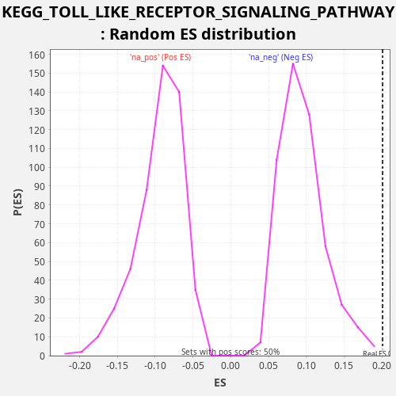

Profile of the Running ES Score & Positions of GeneSet Members on the Rank Ordered List
The same image in compressed SVG format
| Dataset | LabCL |
| Phenotype | NoPhenotypeAvailable |
| Upregulated in class | na_pos |
| GeneSet | KEGG_TOLL_LIKE_RECEPTOR_SIGNALING_PATHWAY |
| Enrichment Score (ES) | 0.20103255 |
| Normalized Enrichment Score (NES) | 2.121972 |
| Nominal p-value | 0.0 |
| FDR q-value | 0.020073382 |
| FWER p-Value | 0.172 |
| SYMBOL | RANK IN GENE LIST | RANK METRIC SCORE | RUNNING ES | CORE ENRICHMENT | |
|---|---|---|---|---|---|
| 1 | IL6 | 17 | 562.504 | 0.0118 | Yes |
| 2 | TLR4 | 19 | 518.932 | 0.0243 | Yes |
| 3 | STAT1 | 41 | 328.402 | 0.0359 | Yes |
| 4 | CCL5 | 95 | 183.633 | 0.0462 | Yes |
| 5 | TLR2 | 421 | 39.216 | 0.0452 | Yes |
| 6 | IRF7 | 915 | 13.725 | 0.0373 | Yes |
| 7 | CASP8 | 924 | 13.595 | 0.0495 | Yes |
| 8 | CD14 | 1140 | 9.775 | 0.0531 | Yes |
| 9 | TLR7 | 1365 | 6.944 | 0.0563 | Yes |
| 10 | TLR3 | 1455 | 6.149 | 0.0652 | Yes |
| 11 | TOLLIP | 1456 | 6.145 | 0.0777 | Yes |
| 12 | NFKBIA | 1606 | 5.092 | 0.0840 | Yes |
| 13 | RIPK1 | 1774 | 4.038 | 0.0896 | Yes |
| 14 | PIK3R1 | 1974 | 3.163 | 0.0938 | Yes |
| 15 | CXCL8 | 2096 | 2.772 | 0.1013 | Yes |
| 16 | IKBKB | 2234 | 2.419 | 0.1082 | Yes |
| 17 | RELA | 2329 | 2.207 | 0.1168 | Yes |
| 18 | PIK3CD | 2459 | 1.971 | 0.1239 | Yes |
| 19 | IKBKE | 2486 | 1.923 | 0.1354 | Yes |
| 20 | CXCL10 | 2595 | 1.745 | 0.1434 | Yes |
| 21 | AKT3 | 2729 | 1.513 | 0.1504 | Yes |
| 22 | TBK1 | 2821 | 1.393 | 0.1591 | Yes |
| 23 | FADD | 3169 | 1.041 | 0.1573 | Yes |
| 24 | IRF3 | 3291 | 0.944 | 0.1648 | Yes |
| 25 | IKBKG | 3372 | 0.896 | 0.1739 | Yes |
| 26 | IFNB1 | 3433 | 0.858 | 0.1840 | Yes |
| 27 | CCL3 | 3451 | 0.849 | 0.1958 | Yes |
| 28 | NFKB1 | 4047 | 0.557 | 0.1836 | Yes |
| 29 | MAPK14 | 4434 | 0.420 | 0.1802 | Yes |
| 30 | IL1B | 4705 | 0.350 | 0.1815 | Yes |
| 31 | MAP2K2 | 5076 | 0.267 | 0.1787 | Yes |
| 32 | MAP3K8 | 5191 | 0.247 | 0.1865 | Yes |
| 33 | TICAM2 | 5350 | 0.220 | 0.1924 | Yes |
| 34 | RAC1 | 5673 | 0.178 | 0.1916 | Yes |
| 35 | MAP2K6 | 5748 | 0.169 | 0.2010 | Yes |
| 36 | MAP3K7 | 6716 | 0.085 | 0.1735 | No |
| 37 | IRF5 | 7172 | 0.061 | 0.1672 | No |
| 38 | IRAK4 | 7890 | 0.033 | 0.1500 | No |
| 39 | TRAF6 | 7964 | 0.031 | 0.1595 | No |
| 40 | IL12A | 8102 | 0.027 | 0.1663 | No |
| 41 | MYD88 | 8805 | 0.013 | 0.1498 | No |
| 42 | AKT1 | 8851 | 0.012 | 0.1604 | No |
| 43 | CXCL11 | 9013 | 0.010 | 0.1662 | No |
| 44 | TAB2 | 9080 | 0.009 | 0.1760 | No |
| 45 | PIK3CA | 9562 | 0.004 | 0.1686 | No |
| 46 | MAPK9 | 9989 | 0.002 | 0.1635 | No |
| 47 | MAP2K4 | 10054 | 0.001 | 0.1733 | No |
| 48 | AKT2 | 10660 | 0.000 | 0.1608 | No |
| 49 | CHUK | 11254 | -0.000 | 0.1488 | No |
| 50 | MAPK12 | 12459 | -0.005 | 0.1114 | No |
| 51 | IFNAR1 | 13023 | -0.011 | 0.1006 | No |
| 52 | CTSK | 13112 | -0.012 | 0.1095 | No |
| 53 | MAP2K1 | 13137 | -0.013 | 0.1210 | No |
| 54 | IFNAR2 | 13174 | -0.014 | 0.1320 | No |
| 55 | TNF | 14727 | -0.052 | 0.0803 | No |
| 56 | PIK3R2 | 15391 | -0.078 | 0.0653 | No |
| 57 | LY96 | 16015 | -0.111 | 0.0521 | No |
| 58 | TIRAP | 16048 | -0.113 | 0.0632 | No |
| 59 | TICAM1 | 16122 | -0.118 | 0.0727 | No |
| 60 | MAPK1 | 16205 | -0.124 | 0.0818 | No |
| 61 | MAP2K7 | 17219 | -0.211 | 0.0524 | No |
| 62 | TRAF3 | 17381 | -0.228 | 0.0582 | No |
| 63 | MAPK3 | 17616 | -0.256 | 0.0610 | No |
| 64 | CD40 | 17822 | -0.285 | 0.0651 | No |
| 65 | IRAK1 | 18078 | -0.320 | 0.0670 | No |
| 66 | MAP2K3 | 18688 | -0.433 | 0.0543 | No |
| 67 | MAPK11 | 18865 | -0.471 | 0.0595 | No |
| 68 | TAB1 | 18921 | -0.488 | 0.0697 | No |
| 69 | MAPK13 | 19482 | -0.658 | 0.0591 | No |
| 70 | TLR1 | 19781 | -0.768 | 0.0592 | No |
| 71 | PIK3CG | 20022 | -0.871 | 0.0618 | No |
| 72 | SPP1 | 20495 | -1.127 | 0.0548 | No |
| 73 | JUN | 20862 | -1.388 | 0.0521 | No |
| 74 | PIK3R3 | 22003 | -3.185 | 0.0175 | No |
| 75 | MAPK8 | 22156 | -3.702 | 0.0237 | No |
| 76 | PIK3CB | 22400 | -4.766 | 0.0261 | No |
| 77 | MAPK10 | 22783 | -7.464 | 0.0228 | No |
| 78 | TLR5 | 23114 | -11.404 | 0.0216 | No |
| 79 | FOS | 23389 | -16.914 | 0.0228 | No |
| 80 | TLR6 | 23766 | -37.852 | 0.0197 | No |

{kind=link}
{kind=link}